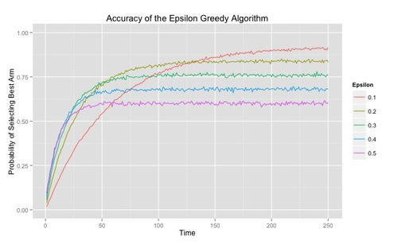

Multi Armed Bandits
A bandit is a collection of arms. When you have many options available to you, we call that collection of options a Multiarmed Bandit. A Multiarmed Bandit is a mathematical model you can use to reason about how to make decisions when you have many actions you can take and imperfect information about the rewards you would receive after taking those actions. The algorithms presented in this book are ways of trying to solve the problem of deciding which arms to pull when. We refer to the problem of choosing arms to pull as the Multiarmed Bandit Problem. [Bandit Algorithms for website optimization]
[...]